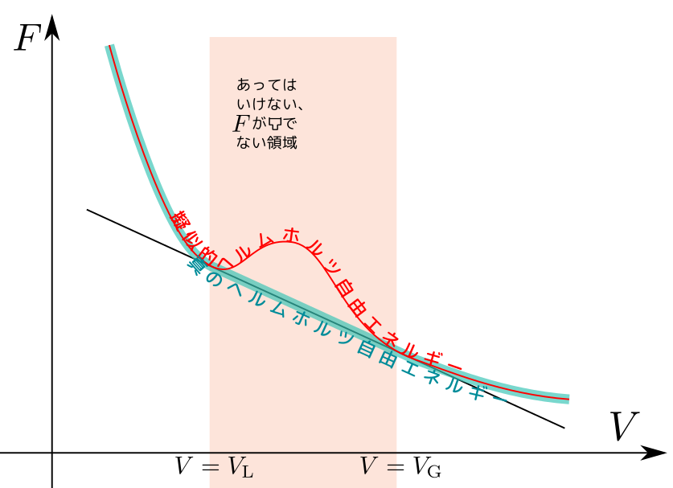

「つりあいの式」から何が言えるかを考えよう。
系が$(T;V_1,N_1)$の系と$(T;V_2,N_2)$の系の二つに分けられるとする（$V=V_1+V_2,N=N_1+N_2$）。つりあいの条件は $$ {\partial F[T;V_1,N_1]\over\partial V_1}={\partial F[T;V_2,N_2]\over\partial V_2} $$ すなわち$p(T;V_1,N_1)=p(T;V_2,N_2)$と、 $$ {\partial F[T;V_1,N_1]\over\partial N_1}={\partial F[T;V_2,N_2]\over\partial N_2} $$ すなわち$\mu(T;V_1,N_1)=\mu(T;V_2,N_2)$である。
理想気体ではそうならないが、状態方程式から計算した擬似的ヘルムホルツ自由エネルギーが「下に凸」でない状況を含んでいる可能性もある。このときは接線を引いて「下に凸」になる「正しいヘルムホルツ自由エネルギー」を作る必要がある。

その段階で$F$のグラフが直線になる（つまり、${\partial^2 F\over\partial V^2}=-{\partial P\over \partial V}=0$になる）状況が現れた。この状況$V_{\rm L}\leq V\leq V_{\rm G}$では異なる${N\over V}$の状況が共存し、圧力は$p=p_{\rm v}$で一定になる。この時化学ポテンシャル$\mu$も一定である（つりあいからもわかるし、$F=-Vp+\mu N$という関係から$\mu={F+Vp\over N}$とすれば、この範囲では$F+Vp$が一定値になる）。
これはたとえば水と水蒸気の共存状態である（ただし、日常に置いて見られる「水と（水蒸気＋空気）の共存状態」はこれとは全く別）
↓相転移が起こってない場合（グラフの赤線）
↓相転移が起こっている場合（グラフの黄線）